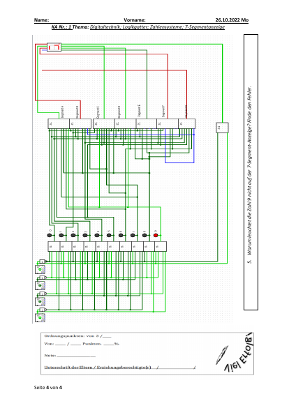
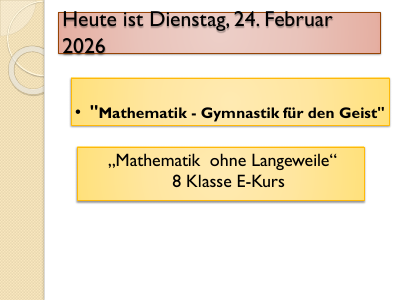

Über mich
Ich verbinde zwei Welten: viele Jahre im Klassenzimmer und viele Jahre an der Werkbank. Deshalb erkläre ich Technik nicht nur mit Formeln, sondern mit dem, was man sehen, messen und selbst bauen kann.
- Lehrer, 11 JahreUnterricht in Mathematik und Informatik (u. a. Zahlensysteme: Binär-, Dezimal- und Hexadezimalsystem).
- ElektroschlosserArbeit im Bergwerk mit Drehstromanlagen (380 V) – Sicherheit und Praxis von Anfang an.
- Elektronik-ReparaturReparatur von Platinen für Parksysteme: Fehlersuche mit Schaltplan, Oszilloskop und Messgeräten; SMD-Bauteile (Prozessoren, AD-/DA-Wandler, Transistoren) mit der Heißluftstation aus- und eingelötet.
- Unterricht in DeutschlandUnterricht an einer Schule: Digitaltechnik in Klasse 10 (Logikgatter, Zahlensysteme, 7-Segment-Anzeige) und Mathematik in Klasse 8 (E-Kurs); Elektronik-Versuche mit den Schülern (z. B. der astabile Multivibrator). Beispiele unten unter Material & Videos.
- Eigenes Lernportal„Quantura“ – selbst entwickelte Lernseite für Sprachen, Mathematik und Elektrotechnik (ansehen).
Was ich anbiete
⚡ Grundlagen der Elektrotechnik
Strom, Spannung, Widerstand, das ohmsche Gesetz, Reihen- und Parallelschaltung – mit Messungen am Multimeter statt nur an der Tafel.
Kurs · Volkshochschule · AG🔢 Digitaltechnik: vom Schalter zur Anzeige
UND, ODER, NICHT – und wie daraus ein BCD-Decoder wird, der eine 7-Segment-Anzeige steuert. Logik, die man leuchten sieht.
Kurs · AG ab Klasse 8🤖 Arduino-AG
Vom ersten Blinklicht bis zum eigenen kleinen Projekt: programmieren, verdrahten, messen, verbessern.
AG · Klasse 7–10🔧 Elektrik im Alltag und im Auto
Wie funktioniert die Sicherung, der FI-Schalter, das Gebläse im Auto? Fehler systematisch finden – Schritt für Schritt.
Kurs · Volkshochschule💻 Zahlensysteme und Codes
Binär, dezimal, hexadezimal – mit einer Geheimbotschaft im Binärcode, die die Gruppe selbst entschlüsselt.
AG · Projekttag📐 Mathematik im Alltag
Prozent, Zinsen, Kredit oder Rabatt? Mathematik an echten Entscheidungen – auch für Erwachsene, die lange nicht mehr gerechnet haben.
Kurs · NachhilfeSo unterrichte ich: Theorie, Versuch, Arduino, Simulation
Jedes Thema hat bei mir vier Schritte. Zuerst die Regel, dann der echte Versuch auf dem Tisch, dann dasselbe Prinzip mit dem Arduino programmiert – und zum Wiederholen zu Hause eine fertige Simulation (z. B. die bewährten HTML5-Apps von Walter Fendt).
| Thema | Versuch | Mit dem Arduino | Simulation zum Nachschauen |
|---|---|---|---|
| Der Stromkreis und das ohmsche Gesetz | Messen mit dem Multimeter; die Bleistiftmine als Widerstand | Spannung mit dem analogen Eingang messen (der Spannungsteiler) | Ohmsches Gesetz |
| Reihen- und Parallelschaltung | Lampen in Reihe und parallel – wo wird es dunkler? | LED-Helligkeit mit dem Potentiometer steuern (PWM) | Kombinationen von Widerständen · Potentiometerschaltung |
| Der Elektromagnet | Die selbstgebaute elektrische Klingel (Video) | Ein Relais schalten – der Elektromagnet als Schalter | Lorentzkraft · Gleichstrom-Elektromotor |
| Der Transistor als Schalter | Der astabile Multivibrator (Video), Signal am Oszilloskop | Das Blinklicht – derselbe Takt, aber programmiert | Oszilloskop-Bild im Versuch selbst |
| Die Digitaltechnik | Logikgatter, Wahrheitstabelle (Klassenarbeit, Klasse 10) | Eine 7-Segment-Anzeige ansteuern | BCD-Decoder auf dieser Seite |
| Sensoren und Motoren | Der Arduino-Roboter (Video) | Abstandssensor, Motortreiber, ein Roboter fährt selbst | – |
Zum Ausprobieren: der BCD-Decoder und die 7-Segment-Anzeige
So sieht eine Stunde Digitaltechnik bei mir aus. Schalten Sie die vier Eingänge D, C, B, A ein und aus: Der Decoder macht aus der Binärzahl eine Ziffer. Unten sieht man, welche UND-/ODER-Verknüpfung das Segment a gerade einschaltet.
D = 8, C = 4, B = 2, A = 1. Die Zahlen 10 bis 15 gibt es im BCD-Code nicht – die Anzeige bleibt dann dunkel.
Beispiele aus Unterricht und Praxis
Der astabile Multivibrator
Zwei Transistoren, zwei Kondensatoren, zwei LEDs – und die Kinder sehen zum ersten Mal, wie eine Schaltung von selbst „taktet“. Danach das Signal am Oszilloskop.
Warum läuft das Gebläse nur auf Stufe 4?
Ein klassischer Fehler im Auto: das vierstufige Heizungsgebläse. Am Beispiel des Vorwiderstands lernt man Reihenschaltung, Spannungsabfall und systematische Fehlersuche.
Die Bleistiftmine als Regelwiderstand
Mit Grafit aus dem Bleistift wird eine LED heller und dunkler – der Widerstand hängt von der Länge des Leiters ab.
Geheimbotschaft im Binärcode
Ein Spruch als Folge von Nullen und Einsen: umrechnen ins Dezimal- und Hexadezimalsystem und entschlüsseln.
Material und Videos aus meinem Unterricht
Arbeitsblätter und Klassenarbeiten (PDF)

Klassenarbeit Digitaltechnik, Klasse 10
Logikgatter und Wahrheitstabellen, ein Aphorismus im Binärcode zum Entschlüsseln (Dezimal-, Hexadezimalsystem, ASCII) und der Schaltplan einer 7-Segment-Anzeige. 4 Seiten, 2022.
PDF öffnen
„Mathematik ohne Langeweile“ – Aufwärmung Geometrie, Klasse 8
Einstieg für die ersten 10–15 Minuten: Wie viele Dreiecke, Quadrate, Rechtecke stecken in der Figur? Danach eine Aufgabe zur Bruchrechnung. 13 Folien.
PDF öffnenVersuche im Video
Der astabile Multivibrator
Zwei Transistoren, zwei Kondensatoren – die Lampen blinken abwechselnd. Aufgebaut auf dem Steckbrett.
Die selbstgebaute elektrische Klingel
Elektromagnet und Unterbrecher: Wie aus Strom eine Schwingung und ein Ton wird.
Der Arduino-Roboter – und Kätzchen Yoda
Ein kleines Roboterauto mit Arduino fährt durch die Wohnung – die Katze ist das beste Testpublikum. (ca. 3 Minuten)
Kontakt
Ich freue mich über Anfragen von Schulen, Volkshochschulen und Bildungseinrichtungen in Willich und Umgebung.
✏️ Kontakt wird noch ergänzt (E-Mail)